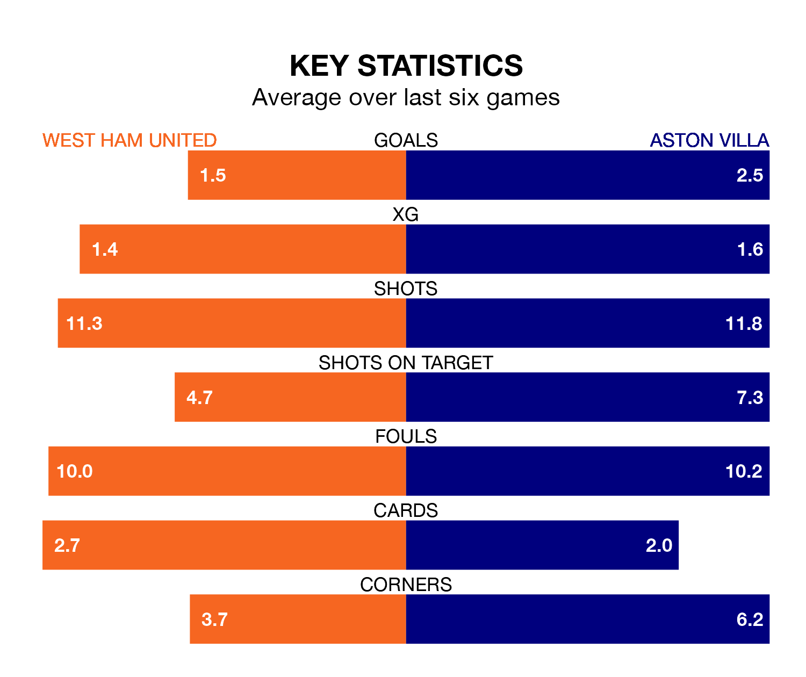

Aston Villa travel to the London Stadium for Sunday's early match against West Ham United looking to bounce back from defeat last time out in the Premier League.
The Villa, who sit fourth in the league after 28 games, fell to a 4-0 home defeat to Tottenham Hotspur on March 10.
They face a West Ham side who secured a draw in their last match, a 2-2 tie with Burnley, and who sit seventh in the table.
With 59 goals in 28 games so far this season, Villa are scoring more than average in the league with 2.1 goals per game. And they are conceding fewer than average, letting in 41 goals at a rate of 1.5 per game.
West Ham, meanwhile, are average scorers, with 1.6 goals per game. They have conceded 1.8 goals per game.
In Ollie Watkins, the Villa have one of the league's most on-form strikers so far this season. He has notched 16 goals in 28 appearances, to sit second in the scoring charts.
His goal rate of one every 155 minutes is quicker than that of Jarrod Bowen, United's top scorer with a goal every 173 minutes, and a total of 14 goals in 27 games.
In the last 10 years, West Ham and Villa have played each other on 13 occasions. West Ham won six of them, Villa two, and they drew five times.
On average, the Hammers scored 1.4 goals and the Villa 0.9 in those matches.
Their last meeting was on October 22, when Villa won 4-1 at home.
The Hammers are in mixed form in the Premier League, with two wins and a draw from their last six games.
With four wins and two losses over that period, the visitors' form is better – they have taken 12 points from 18, compared to the home team's seven.
Sunday's match will be refereed by Jarred Gillett, who has taken charge of 14 Premier League games so far this season, issuing two red cards and booking 64 players. He has awarded five penalties.
The last Villa game Gillett refereed was the 1-0 win at home against Arsenal on December 9. He is yet to oversee a match featuring West Ham this season.
Updated: 15:10 (UTC), 15/03/24